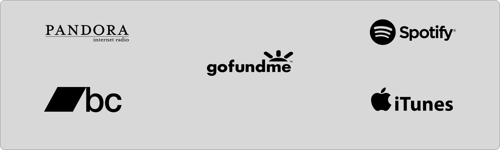

USER CHART
The user chart gave me insight on how the layout would effect the user’s loop inside of the web app. Also, if the design is still aligned with the intended goal it was set out for.

Is a web application, that is made for independent artists to receive donations from fan supporters. This can establish a more intimate relationship between artist and fan. The fans are also rewarded by, receiving award points. And with reward points, fans can purchase items at a discounted price.
VIEW PROTOTYPEAs soon as I started on this project I looked at why people couldn't support an indie artist in a convenient way. This is what lead me to make this one stop shop, for finding an indie artist and supporting an independent artist. While working on this project I found out that 95% of the polled participants listen to music on their mobile device. And 74% of the participants enjoy finding a new independent artist. As well as 68% of participants would not mind finical supporting independent artist.

Looking at top streaming services as a reference point on how the ui/ux will operate smoothly. Gave me perspective on how I was going to design the web layout. I was trying to see what do these companies offer independent artists and how the people who support them will be compensated.
The user chart gave me insight on how the layout would effect the user’s loop inside of the web app. Also, if the design is still aligned with the intended goal it was set out for.
I was testing out different logos to see which one as a long-lasting appeal, and still as an original feel. During this process, I experimented with different geometric shapes.

I learned that spacing and typography was two huge parts missing out of my design. Also making sure that certain sections were highlighted properly.

I took the feedback that I have received from the previous testing and improved upon it. By changing the typography, it gave the design a more sleek and modern feel to it. Also by making sure the hero for the home page was standing out as well.
 VIEW PROTOTYPE
VIEW PROTOTYPE
Plugged Waves is designed with the intentions of making a supplier to consumer relationship harmonious. Plugged Waves can act as storefront indie artist who is just trying to break into the music world. By giving independent artists another way of connecting with supporters. That also gives fans more incentive to be supportive because they are rewarded as well.